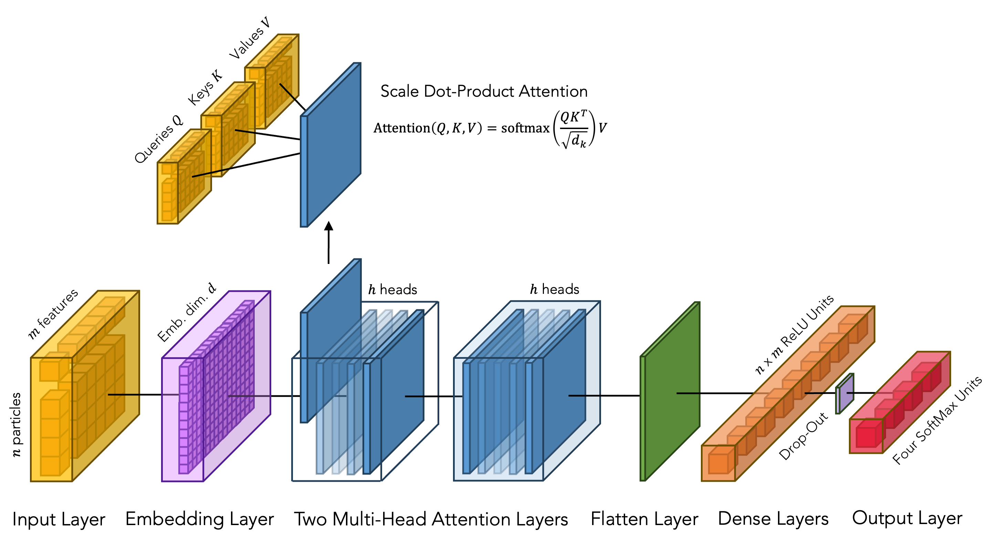

Transformer Model
An implementation of a modular Transformer encoder model is available in the model.py script, where the build_transformer function builds a multi-head attention-based classifier model using TensorFlow’s Keras API.
Illustration of a configurable model architecture with 1 embedding layer, 2 multi-head attention layers and 1 dense layer for a 4-classes classification problem:

Input Layer
The input layer sets the stage for passing input data into the subsequent layers of the Transformer model. A Keras input tensor is instantiated using tensorflow.keras.Input to create a placeholder tensor that is used as the input in the model. The input tensor is expetected to have a shape of (nparticles, nfeatures), where nparticles represents the number of final state particles in the input sequence, and nfeatures represents the number of kinematic features for each particle.
Embedding Layer
An optional embedding layer can be instrumental for eleviating performance of the network. For instance it can be used for transforming categorical or discrete input features into dense, continuous vector representations that can be learned during training. For tasks that require a better data representation than the input one, such as unfolding the input space to reveal intricate information that the network can better utilize, the embedding layer also proves to be invaluable, enabling the model to uncover and effectively utilize nuanced patterns and relationships within the input data. By learning the embeddings from the input data, the model can adapt to the specific task at hand, ultimately enhancing its ability to extract meaningful features and make accurate predictions.
A custom FloatEmbedding class initializes embedding weights in its constructor, which are randomly initialized and trainable, and then performs the embedding lookup operation in its call method. The embedding layer is optionally included based on the embedding parameter, allowing for the transformation of input. The embedding_dim parameter defines the dimension of the embedded space for which the data from input feature space is project into. During the training process, the model learns the optimal transformation matrix built upon the trainable parameters. Purely linear transformation is considered so far, no additional activation function is included.
Multi-Head Attention Layer
The attention mechanism in multi-head attention layers is a crucial component in Transformer models. It allows a model to weigh the importance of different final state particles in the input sequence when processing each event. This mechanism enables the model to capture long-range dependencies and relationships between the final state particles. In a multi-head attention layer, the attention mechanism is applied multiple times in parallel, each with its own set of learnable parameters. This results in multiple sets of attention weights being computed simultaneously, providing the model with multiple perspectives or "heads" to attend to different parts of the input sequence.
In the context of multi-head attention mechanisms, the input sequence is transformed into the so-called query \(Q\), key \(K\) and value \(V\) matrices which play a crucial roles in aggregating information across the input sequence. The query \(Q\), key \(K\) and value \(V\) matrices are obtained by linear transformations of the input tensor \(Q=XW_{Q}\), \(K=KW_{K}\) and \(V=VW_{V}\), where \(W_{Q}\), \(W_{K}\) and \(W_{V}\) are learnable weight matrices. These learnable parameters are optimized during the training process allowing the model to adapt and learn representations that are most relevant for the tast at hand.
Attention scores are then computed between each pair of input sequence elements from the dot product of query and keyvectors and scaled by the square root of the dimensionality \(d_{k}\). These attention scores represent the relevance or importance of other final state particles in the input sequence with respect to the current one. The attention scores are then scaled and passed through a softmax function to obtain attention weights. These weights determine how much each final state particle contributes to the representation of the current one. Finally, the weighted sum of the value vectors, where the weights are given by the attention weights, is computed. This results in a context vector for each final state particle, capturing information from other particles in the sequence based on their importance.
\(A(Q,K,V) = softmax\left( \frac{QK^{T}}{\sqrt{d_{k}}} \right)V\)
In multi-head attention layers, this process is repeated across multiple heads, each with its own set of query, key, and value vectors in general. The output of each head is then concatenated and linearly transformed to produce the final output of the multi-head attention layer.
In practice, multi-head attention layers are added to the model using the specialized Keras layers tensorflow.keras.layers.MultiHeadAttention. The number of attention heads to be uses in the mulit-head attention mechanism is specified with dedicated configurable parameter. The dimensionality of the key vector is set equal of the number of final state particles (nparticles). In the context of the so-called "self-attention" attention approach, the same input is used as the query, key and value.
Flatten Layer
The flatten layer essentially collapses all dimensions except for the batch dimension, simplifying the data structure for subsequent layers. In practical terms, after passing through the multi-head attention layers, the tensorflow.keras.layers.Flatten layer reshapes the output into a linear format compatible with densely connected layers that can perform classification tasks.
Dense Layer
After flattening, the output of the multi-head attention layers is passed trough a tensorflow.keras.layers.Dense layer with nparticles x nfeatures neurons and a configurable activation function. Additional hidden dense layers can be added, each with the same number of neurons and activation function. These layers learn complex patterns and represnetations in the data though learned weights and biases in order to increase the model's capabilities to capture remnant nonlinear relationships in the data
After each dense layer, dropout regularization is applied to prevent overfitting and improve the generalization. The tensorflow.keras.layers.Dropout layer randomly set a fraction of input inuts to zero during the training, introducing noice and reducing reliance on specific inputs.
Output Layer
Finally, an output layer serves the crucial role of producing the final predictions of the model. In classification tasks, the output layer assigns probabilitiies to each class, indicating the likelihood of the input belonging to each class. Softmax activation function ensures that the predicted probabilities sum up to 1 across all classes, facilitating interpretation and decision-making. In regression tasks, the output layer directly predicts continuous values without any activation function. The model learns to map input sequences to continuous values directly, optimizing for regression objectives such as minimizing mean squared error.
In practive, depending on the specified training_mode, the output layer is constructed differently.
For classification tasks (training_mode == "classification"), A dense layer with nclass neurons is added, followed by a softmax activation function. For regression tasks (training_mode == "regression"), A dense layer with a single neuron is added, representing the regression output.